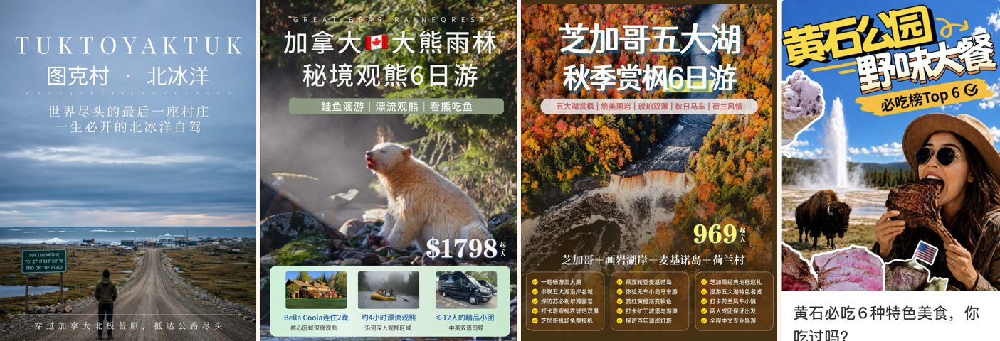
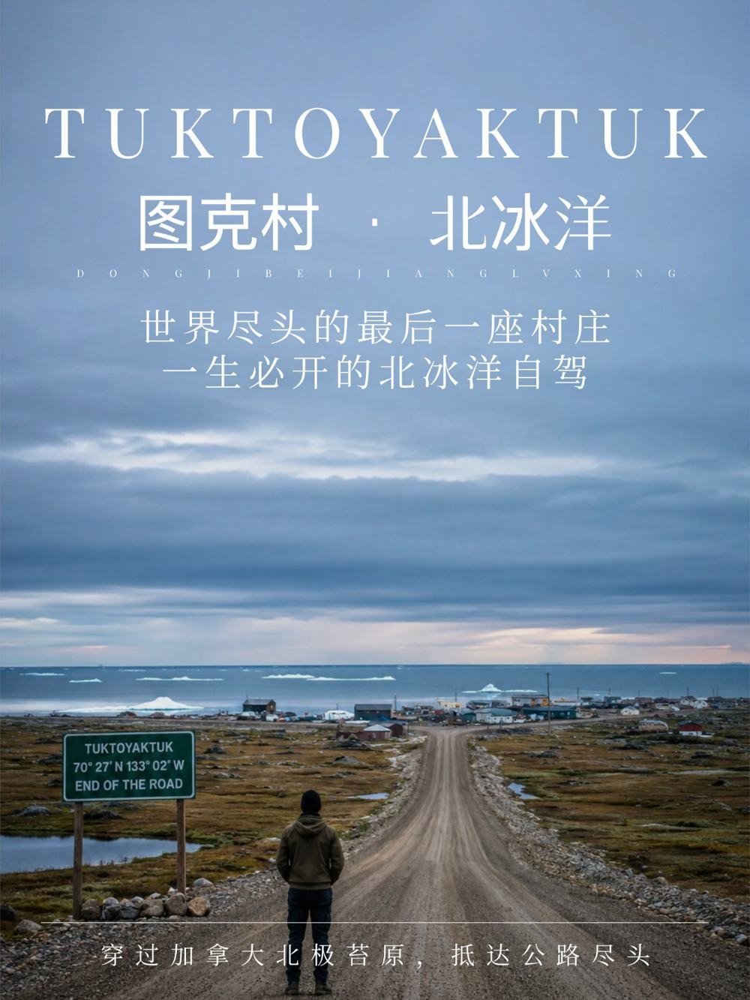
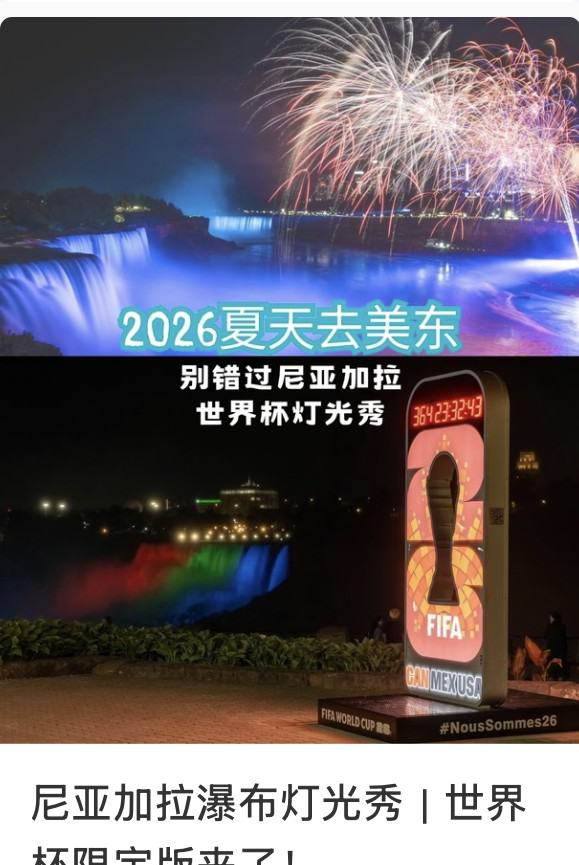
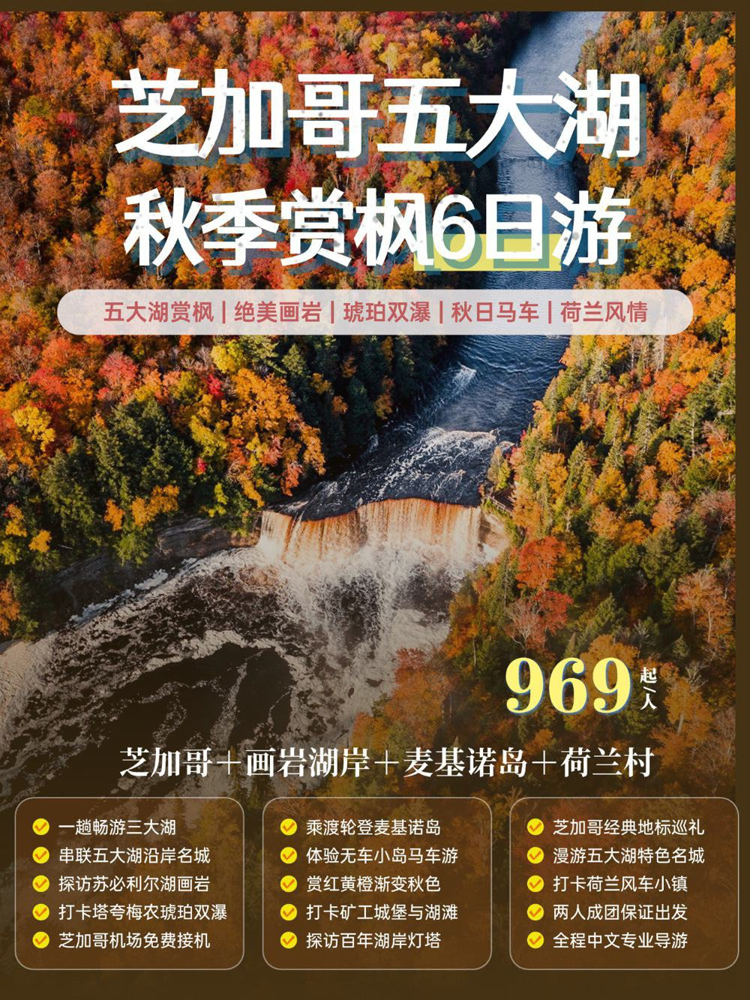
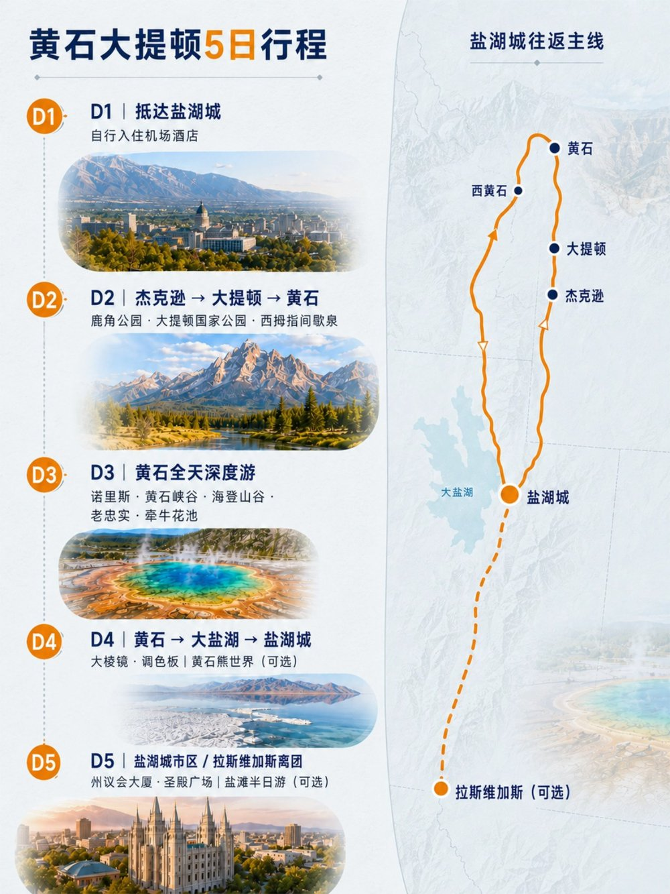

Growth Marketing · Product Positioning · Paid Social
Building a Content-to-Lead Growth Engine on Xiaohongshu
I helped reactivate a dormant Xiaohongshu (RedNote) channel for a travel brand and turn it into a measurable acquisition channel — from deciding what to promote and how to position it, to content, paid media, inquiry capture, and optimization.
CompanyMoreAhead Digital Lab
RoleGrowth Marketing Intern
TimelineJune 2026 – Present
Brand趣环游 · MoreAhead Travel (in-house brand)

Real post covers from the account — left to right: Tuktoyaktuk ("the road's end Arctic village"), Great Bear Rainforest, Chicago–Great Lakes fall foliage, Yellowstone food guide.
60inbound inquiries
22leads captured
36.7%inquiry → lead conversion
3completed bookings
01Context
MoreAhead Travel（趣环游）'s Xiaohongshu account had been inactive for months. The business wanted to rebuild brand awareness among Chinese-speaking travelers in North America while using social media to generate qualified travel inquiries.
My task: determine what to promote, how to position it, and how to turn content and paid media into leads.
02Channel & Funnel Research
I began by researching the broader travel marketing landscape to understand how different channels support the customer journey and where I could contribute most effectively.
Mapped the travel funnel from awareness → consideration → inquiry → conversion → retention
Evaluated major channels including Xiaohongshu, Instagram, TikTok, Facebook, YouTube, Google Search/Ads, email, influencer marketing, OTAs, GEO, and AI-agent opportunities
Compared each channel across audience fit, content format, speed of feedback, conversion role, and suitability for seasonal or time-sensitive travel products
Used the research to discuss channel priorities with my mentor and identify where I could take deeper ownership
Awareness
→
Consideration
→
Inquiry
→
Conversion
→
Retention
Why Xiaohongshu Became a Key Focus
Following the research presentation, I took primary ownership of Xiaohongshu, which was a strong fit for the brand because:
The product portfolio naturally served Chinese-speaking travelers
Both overseas Chinese users and mainland Chinese travelers are highly concentrated on the platform
Its organic and paid distribution can generate relatively fast feedback for seasonal and limited-departure products
Its visual, information-dense format fits how travelers research routes, lodging, pricing, seasonality, and trip highlights
My Xiaohongshu content was also adapted for Ctrip, with changes to tone, structure, and information density rather than direct copy-pasting.
Key takeaway. The research gave me a broader view of the travel marketing landscape; after presenting the findings, I took end-to-end ownership of Xiaohongshu as my primary channel, where the audience, content format, and fast feedback loop aligned especially well with the brand.
03Product Selection & Positioning
The brand had a large catalog of North American and European tours, but limited marketing resources — so I treated product selection as a marketing decision, not a matter of promoting every available route.
Built a prioritization framework around seasonality, audience fit, differentiation, visual potential, booking timing, pricing/lodging advantage, and tour-operator value
Prioritized products with a clear, communicable hook rather than itineraries with many features but no strong reason to choose them
Translated operational product features into customer value:
In-park lodging → less driving and better access
Small-group format → greater flexibility and less waiting
I recommended moving it into the priority marketing pool and later developed its positioning, creative, and paid campaign.
One sharp, defensible value proposition > a long list of generic attractions.
04Content Strategy
I built the content strategy around three repeatable content pillars rather than treating every post as a one-off creative project.
01
Discovery & Curiosity
Use a specific or surprising destination detail to earn attention, saves, and shares.
Tuktoyaktuk — "the village at the end of the road"Yellowstone local-food guide
02
Timely & Seasonal
Connect travel products to seasonal demand, events, or cultural moments.
Niagara Falls World Cup illuminationGreat Lakes fall foliage
03
Conversion-Oriented
Turn complex itineraries into decision-ready information around:
route · lodging · group sizeprice · season · unique experiences
Each promotional post followed a reusable structure: Cover → Core Value Proposition → Key Highlights → Route / Map → Decision Information → CTA. I also created multiple cover and headline variations so stronger concepts could be tested through paid media.

EN: "Tuktoyaktuk · Arctic Ocean — the last village at the end of the world"

EN: "Niagara Falls Light Show — limited World Cup edition"

EN: "Chicago–Great Lakes Fall Foliage, 6 Days"

The map + itinerary format — day-by-day list paired with an actual route map.
05Paid Social & Funnel Optimization
Once the account had a repeatable content base, I expanded into Xiaohongshu paid acquisition.
Tested combinations of tour product × cover creative × headline × audience targeting
Tracked performance beyond impressions and CTR using DM inquiries, lead capture, CPL, and inquiry-to-lead conversion
Compared upper-funnel engagement with downstream lead quality to identify which campaigns attracted higher-intent users
Used results to refine product messaging, creative hierarchy, CTA, audience targeting, and budget decisions
Higher CTR did not always mean better business performance. Some campaigns generated fewer clicks but much stronger inquiry-to-lead conversion — which shifted my optimization focus from click efficiency to downstream lead quality.
What I LearnedThis project taught me to think about growth as a connected system rather than separate content or advertising tasks. The strongest results came from aligning product selection, positioning, creative, audience, and downstream conversion, rather than optimizing any single metric in isolation.